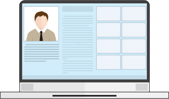

Створіть власну радіостанцію!
Це дуже просто!
Набагато складніше зробити це правильно!
Щомісяця на онлайн-платформах, таких як YouTube, з'являється понад 500 нових радіостанцій. І лише деякі з них стають популярними та приносять значний прибуток. У чому секрет? Яка формула успіху? Дізнайтеся на найближчому дводенному БЕЗКОШТОВНОМУ марафоні!
Що чекає вас на нашому марафоні?
2 безкоштовних навчальних вебінарів, де ви дізнаєтися:

Як створити своє власне онлайн-радіо на нашій платформі
 як правильно оптимізувати свій сайт і зробити його
його привабливим для пошукових систем.
як правильно оптимізувати свій сайт і зробити його
його привабливим для пошукових систем.
 Ви дізнаєтеся, що таке "хороша індексація", "високий трафік", "стабільний приріст відвідувачів", "ТОП за запитами" і, що набагато важливіше, як досягти всіх цих показників!
Ви дізнаєтеся, що таке "хороша індексація", "високий трафік", "стабільний приріст відвідувачів", "ТОП за запитами" і, що набагато важливіше, як досягти всіх цих показників!
2 безкоштовних навчальних вебінарів, де ви дізнаєтися:
Що таке онлайн радіо та чим воно важливе?

Онлайн-радіо революціонізувало спосіб споживання аудіоконтенту. Лише одним клацанням миші або дотиком слухачі можуть отримати доступ до різноманітної музики, ток-шоу, новин та подкастів з усього світу. На відміну від традиційного радіо, онлайн-радіо пропонує практично безмежний вибір станцій на будь-який смак та інтерес
Незалежно від того, чи любите ви поп, рок, джаз, класику, будь-який інший жанр або навіть подкасти, в Інтернеті знайдеться радіостанція для вас. Онлайн-радіо також надає можливість незалежним виконавцям і нішевим жанрам охопити ширшу аудиторію.
Крім того, зручність онлайн-радіо неможливо переоцінити. Воно доступне в будь-який час і в будь-якому місці, незалежно від того, де ви знаходитесь - вдома, на роботі чи в дорозі. Завдяки мобільним додаткам і потоковим сервісам слухачі можуть насолоджуватися улюбленими станціями на смартфонах, планшетах або комп'ютерах, підключених до Інтернету.
Ми навчимо вас, як створити привабливе онлайн-радіо для користувачів і правильний веб-сайт для пошукових систем, а також порадимо, як вивести його на перші сторінки, обійшовши всіх конкурентів.
Після проходження тренінгу ви зможете